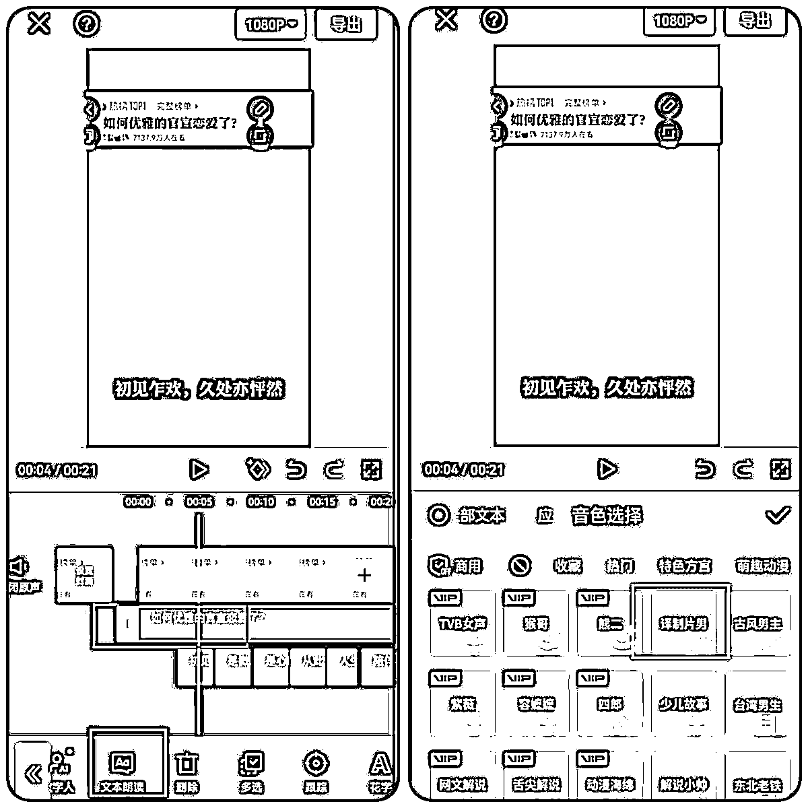

来源：https://o0yvn3o31a.feishu.cn/docx/VC2UdF44NoTXSSx34ljcZ8aJnZc
大家好，我是黄岛主！
自上次写完视频号祝福赛道的精华帖后，发现视频号流量主变现越来越热门，很多圈友都开始入局这个项目，导致后来祝福号赛道操盘者增多，我们后来也慢慢的放弃了祝福赛道。后来我们也做了一些不错的赛道，但是很多赛道没法直接分享出来，因为分享出来肯定一堆人去做，大家都做的话，基本上赛道就会泛滥的。
尽管如此，我还是想去分享一些不错的视频号赛道给圈友，正好今天有时间，我写一篇我们做过的一个赛道“今日话题”短视频，这个赛道还是不错的，热门程度很可观，流量主收益也非常不错，每天基本上稳定30-50左右，收益图就不放了，这个大家看完文章后去实操就可以体验到这个收益程度！
来，先看下今日话题视频案例：
再来看下我们操作的今日话题账号效果展示：
其实这个赛道制作挺简单的，照着我下面写的教程去制作，基本10分钟就能做完一个视频，收益的话单号平均30-50/天，当然，如果圈友都去做，后续肯定会因为最近做这个赛道的人太多了最近流量有所下降，这个大家到时候观察下吧！
下面的图是我们一开始操作的数据，可作为收益参考值：
也就是，你做的时候，收益也跟我这个差不多，除非你能差异化，有自己的一套玩法在里面，比较每个人操作起来都是不一样的，起号效果也是不一样的。
另外，过计划的话，这个赛道建议一直发今日话题短视频，粉丝够100了，差不多自然开通创作者计划，所以也没什么快速的方法，就是持续做这个赛道的内容即可。
关于实操的话，我说几点经验，这个仅供参考：
1、做这个项目最好的用新号（新号爆了后后续数据也会很好），我们部分老号去做，但后续流量一直起不来，而且做这个项目一定要有耐心，运气好的话3-5天爆作品，我两个都是10天后才爆作品，之前都是几千浏览量。所以，你要忍得住寂寞！先把周期放到15-30天左右！
这个赛道有个好处，一旦爆了会随随便便都上百万播放量，而且我建议大家一个号一天就发一个作品，我数据好的账号一天就发一个作品，做得好的同行也是，多发系统会判定你账号质量不行，我第二个号就是多发导致流量一直上不去。
2、素材的图片去微博或者微信找，搜索关键字比如猫，狗，表情包，汤姆猫，壁纸等等，但一定要截图，不要保存图片。
3、同行视频号爆过的作品很容易抄过来过创作者计划，题目抄下来改改，然后文案的话去评论区找评论比较多的评论。但千万不要全抄
4、我觉得这个赛道养号挺重要的的，我就每天都去刷同行视频，关注，点赞，评论。我数据好的那个号就是这样做的。
以上则是我们工作室实操这个项目积累的一些经验吧！仅供参考！
好了，具体操作步骤，我们详细来看下面哈！
一、获取素材
步骤如下：打开微信，点击我的，点击表情，里面有很多表情包，选择一些比较可爱、好看的添加上，然后在右边放大镜点击搜索想要的表情，在微信对话框搜索想要的表情关键词。
下载表情包之前，先搜索表情保存助手，这个是有公众号的，你们搜索后关注一下这个工具，如果有其他的工具也可以代替。
然后我们在使用表情的时候，直接把需要的表情发给他，就会给你下载的链接，点击下载，保存原图到相册就可以了。具体如图：
我这也有搜集好的素材大全，总共5.7G，也可以分享给大家：
二、获取文案
根据你选择的对标素材，然后直接去抖音里搜索就可以，这个我建议你多去看下对标账号，才能有经验的，你一开始做什么都不去参考，肯定不行的！
操作方法：在搜索框搜索文案，找图文，比较简单的，先收藏、点赞一下，或者也可以直接搜索如何宣布自己恋爱了，文案都可以拿来用，先把里面的文字提取出来。
三、视频制作
具体操作步骤，我用图文来展现给大家：
1、导入开头图片，打开剪映，点击开始创作，先把开头的图片放进去，点击高清，添加，把它往上拉到合适的位置，把比例调成9:16，添加文字，新建文本，输入如何优雅的官宣恋爱了，样式、字体改一下，改成黑色，有很多样式，找一个比较喜欢的就可以，缩小放到合适的位置。
背景图的网盘下载链接：https://pan.baidu.com/s/10oRGvDzJ-KIyWl13YYrjCA?pwd=8epw
提取码：8epw 这个自己下载就行了，或者自己设计个！
2、字幕，点击新建文本，把文本里的文案依次输入放进去，字体颜色、样式都可以根据自己的喜欢选择，太长的可以给分成两段，直接复制一层输入之后的文字字幕就可以了，把文字字幕依次拉动到下方合适的位置。
3、配音，给字幕添加配音，选择一个文案，然后往右滑，点击文本朗读，选择译制片男，点击左上角应用到全部，点击勾号，所有字幕都朗读完了，然后把语音依次调整对齐。

4、添加表情包，表情包在微信里面下载过了，直接点击添加贴纸，点击加号，选择照片，依次把需要用的表情包添加进去，可以多添加几个，后边多余的最后再删除，添加完之后，依次调整一下表情包的大小和顺序顺序，一个表情包对应一句话，中间一定不要有空隙，要对齐，调整完之后整体看一下，全部都调完之后播放检查一下效果。
开头的如何优雅官宣自己恋爱了没有字幕，可以添加一个字幕，再给字幕添加一个动画效果，点击动画，选择一个喜欢的动画放上去，把时长拉满，开头的热榜话题不要放，后面的字幕依次放上动画效果，全部都弄好之后，整体看一下效果。
背景是黑色的，可以再给它添加一个背景颜色，下面工具栏右滑找到背景， 点击画布样式，有很多样式，不放也可以，或者用纯色，也可以自己去小红书上去下载一些图片放进去也是可以的，点击全局应用即可。
5、背景音乐，背景音乐我们可以提前去抖音里面收藏，点击音频，点击抖音收藏，搜索纯音乐，点进去搜索，找到合适的放上去，点击使用。
音频拉到最前面，把音量调小，配音音量给他调大，然后把后边多余的配音分割删掉，把整体视频的文本，表情包都拉到对齐，视频就制作好之后，点击上角1080P，把帧率拉到60，码率推荐，点击导出就可以，导出完之后去发布，封面的话也可以直接截取视频里一帧比较好看的。
最终就做成成品视频了：
昨晚视频，正常发布就行了，发布的时候，参考下对标，具体发布我就不写了，这个很简单的！
好了，写了这么多，如果圈友对这个感兴趣的话，可以去搞搞这个赛道，虽然分享出来入局的人多了，但是可以拿去练手。如果有需要解答或交流的，直接找我就行了。